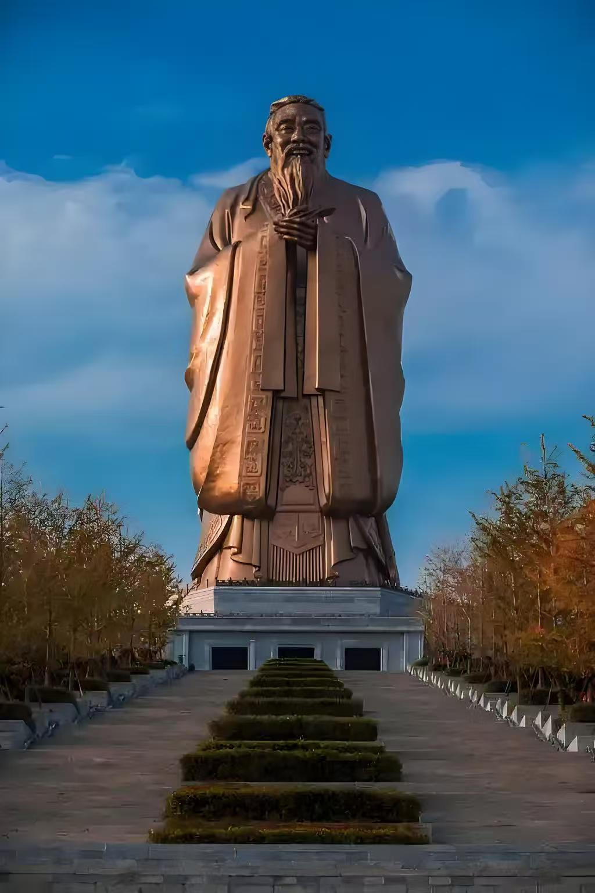

城市概况
济宁，位于山东省西南部，地处鲁苏豫皖四省交接地带，是中华文明的重要发祥地之一，素有"孔孟之乡、运河之都"的美誉。这里历史悠久，文化底蕴深厚，是儒家文化的发源地，也是《水浒传》中水泊梁山的原型地。
文化底蕴

儒家文化发源地
作为儒家文化的发源地，曲阜的"三孔"（孔庙、孔府、孔林）承载着两千多年的文化积淀，每年吸引着全球目光。孔子、孟子等儒家思想的代表人物都诞生于此，其思想影响深远，至今仍是中华文化的重要组成部分。此外，这里还是《水浒传》中水泊梁山的原型地，梁山风景区以武侠文化与自然风光闻名，再现了"大块吃肉，大碗喝酒"的豪情。
自然风光
湖光山色
京杭大运河纵贯济宁，曾造就"富庶甲齐郡"的漕运重镇，如今留下太白楼、竹竿巷等历史遗迹，诉说着昔日的繁华。微山湖碧波万顷，夏日荷花映日，既是生态胜地，也是铁道游击队红色记忆的承载地。尼山圣境以孔子诞生地为背景，将传统文化与现代科技融合，成为传播国学的新地标。
经济发展
新旧动能转换
经济上，济宁依托煤炭资源奠定工业基础，正加速新旧动能转换，发展高端装备制造、新能源等新兴产业。作为淮海经济区核心城市，高铁网络贯通南北，联动京津冀与长三角。这座"江北水城"兼具历史厚重与现代活力，从古韵悠长的街巷到蓬勃发展的产业园区，从湖光山色的自然画卷到儒风雅韵的文化体验，济宁正以开放包容的姿态，书写着传统与现代交融的崭新篇章。